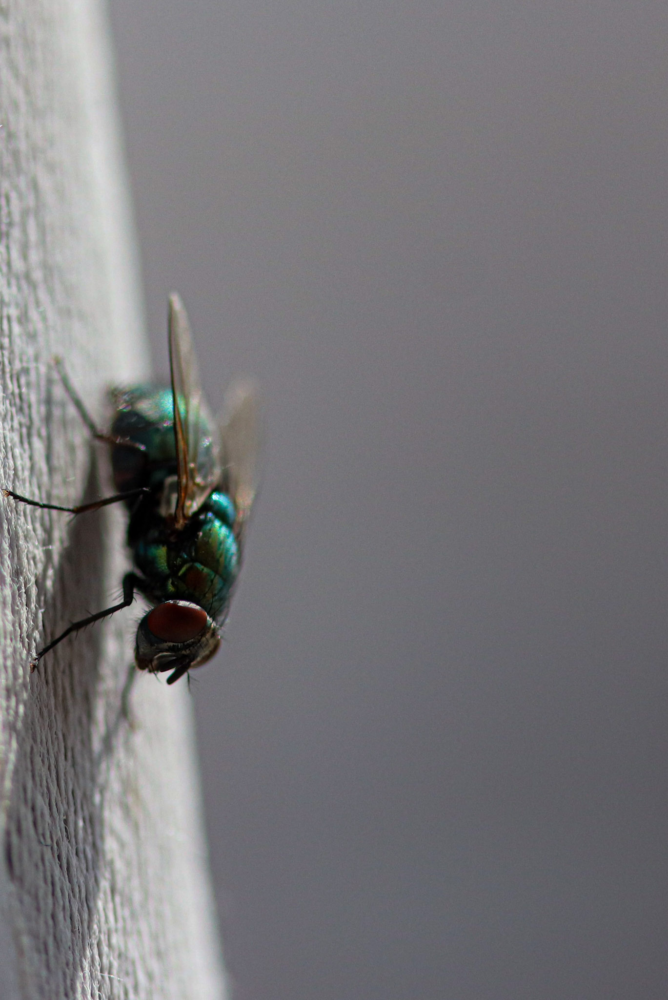
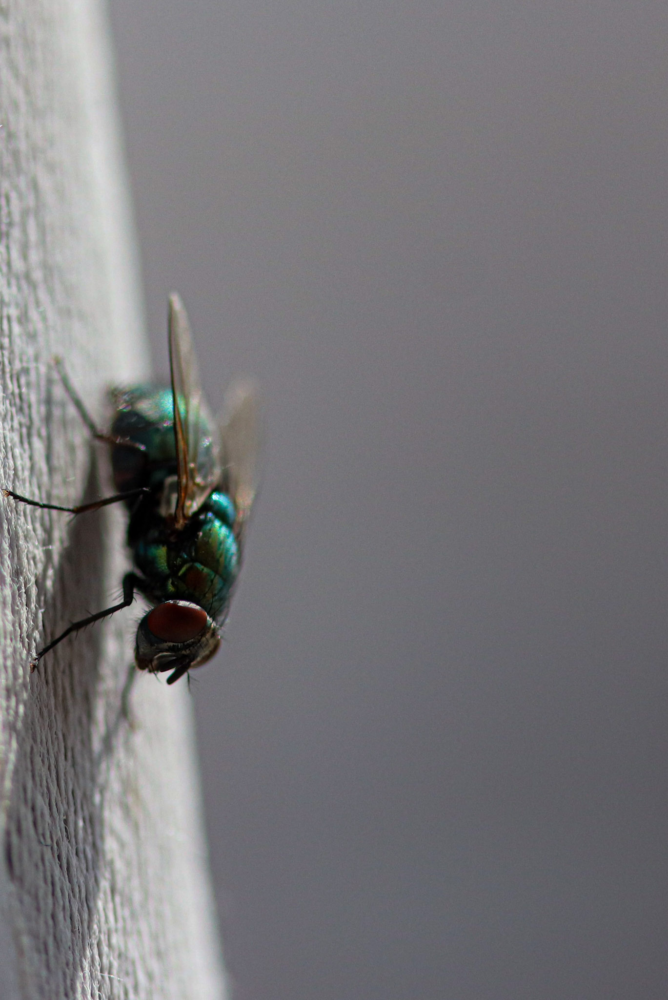

Dive into a captivating visual journey showcasing Sivasankar's unique perspective on moments, landscapes, and the beauty of the world captured through the lens.
 

Dive into a captivating visual journey showcasing Sivasankar's unique perspective on moments, landscapes, and the beauty of the world captured through the lens.
Immerse yourself in the art of storytelling through motion pictures. Experience Sivasankar's cinematic projects and collaborations that bring narratives to life on screen.
BackWitness the wonders of the natural world through Sivasankar's lens. Explore captivating moments of wildlife in their natural habitat, each image telling a unique story of the untamed.
Step into the intersection of technology and art with Sivasankar's ventures in Interactive Media. Experience engaging visual narratives that push the boundaries of creative expression.
Explore the achievements and accolades earned by Sivasankar, including the prestigious Best Assistant Cinematographer award and other notable recognitions in the field.